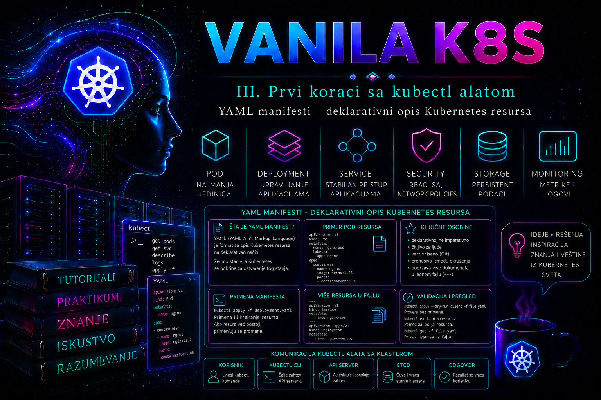

Vanilla Kubernetes

Kubernetes administrator ne upravlja klasterom samo izvršavanjem pojedinačnih komandi. U ozbiljnom okruženju stanje resursa opisuje se deklarativno, čuva u verzionisanom repozitorijumu, proverava pre primene i zatim kontrolisano prosleđuje Kubernetes API serveru. YAML manifest predstavlja čitljiv zapis željenog stanja jednog ili više Kubernetes objekata: administrator navodi šta treba da postoji, dok API server, admission mehanizmi, scheduler i odgovarajući kontroleri odlučuju kako će to stanje biti prihvaćeno i ostvareno.
Manifest nije skripta koja se izvršava red po red. Redosled polja kao što su metadata, spec i njihove unutrašnje osobine uglavnom nema izvršno značenje. Dokument se parsira u strukturirani objekat, proverava prema Kubernetes API šemi, autorizuje, eventualno menja kroz admission webhooks i čuva kao API resurs. Zbog toga sintaksno ispravan YAML nije nužno i validan Kubernetes manifest, a validan manifest ne mora automatski proizvesti funkcionalnu aplikaciju.
Deklarativni model i uloga YAML manifesta
U imperativnom radu administrator zadaje operaciju: „napravi Deployment”, „promeni broj replika” ili „izloži servis”. U deklarativnom radu opisuje krajnje stanje: Deployment treba da ima tri replike, određenu sliku kontejnera, port, resurse, provere zdravlja i skup oznaka. Kubernetes kontroleri zatim neprekidno porede željeno stanje iz polja spec sa stvarnim stanjem i preduzimaju korektivne akcije.
Deklarativni model omogućava ponovljivost, reviziju promena, automatizovanu validaciju, GitOps pristup i kontrolisani povratak na prethodnu verziju. Isti manifest može biti pregledan, testiran i primenjen kroz razvojno, testno i produkciono okruženje, uz odgovarajuće upravljanje razlikama. Manifest ipak nije kompletan sistem upravljanja konfiguracijom: ne rešava samostalno generisanje tajni, izbor vrednosti za različita okruženja, redosled složenih migracija baze podataka ili upravljanje zavisnostima između više aplikacija.
YAML je samo jedan format za predstavljanje Kubernetes API objekata. API server razmenjuje JSON, dok kubectl prihvata YAML i pretvara ga u odgovarajuću strukturu zahteva. JSON je validan podskup YAML-a, ali se YAML u administratorskom radu češće koristi zbog bolje čitljivosti i jednostavnijeg uređivanja višelinijskih vrednosti.
Obavezna polja Kubernetes objekta
Većina Kubernetes manifesta sadrži četiri osnovne celine: apiVersion, kind, metadata i spec. Tačna struktura zavisi od vrste resursa. Neki objekti, kao što je ConfigMap, nemaju klasično polje spec, već koriste polja poput data i binaryData.
apiVersion: apps/v1
kind: Deployment
metadata:
name: catalog-api
namespace: catalog-prod
spec:
replicas: 3
selector:
matchLabels:
app.kubernetes.io/name: catalog-api
template:
metadata:
labels:
app.kubernetes.io/name: catalog-api
spec:
containers:
- name: catalog-api
image: registry.example.com/platform/catalog-api:1.4.2- apiVersion određuje API grupu i verziju šeme koju API server koristi. Vrednost
apps/v1označava grupuappsi verzijuv1, dok osnovni resursi kao što su Pod, Service, ConfigMap i Secret koriste jezgro API-ja i vrednostv1. - kind određuje vrstu objekta, na primer
Deployment,Service,ConfigMapiliNamespace. Naziv je osetljiv na velika i mala slova. - metadata sadrži identitet i opisne podatke objekta: ime, namespace, labels, annotations i podatke koje Kubernetes dodaje nakon kreiranja.
- spec opisuje željeno stanje. Njegova unutrašnja struktura zavisi od vrste i API verzije resursa.
Administrator ne treba da pogađa API verzije i dostupna polja. Podržane resurse proverava prema konkretnom klasteru:
kubectl api-resources
kubectl api-versions
kubectl explain deployment
kubectl explain deployment.spec.template.spec.containers
kubectl explain deployment.spec.strategy --recursive
Komanda kubectl explain koristi OpenAPI šemu koju objavljuje API server. Zato je pouzdanija od kopiranja starog primera sa interneta. Verzija kubectl klijenta treba da bude u podržanom rasponu u odnosu na verziju API servera, jer velike razlike mogu izazvati neusklađenost mogućnosti, podrazumevanih vrednosti i validacije.
Metadata, imena, namespace, labels i annotations
Polje metadata.name određuje stabilno ime objekta. Ime mora biti jedinstveno za istu vrstu resursa unutar odgovarajućeg namespace-a, odnosno na nivou klastera za cluster-scoped resurse. Alternativa je generateName, kada API server dodaje jedinstven sufiks, ali takav pristup nije pogodan za resurse koje drugi manifesti moraju predvidljivo referencirati.
Polje metadata.namespace mora odgovarati ciljnom okruženju. Izostavljanje ovog polja prepušta izbor namespace-a aktivnom kubeconfig kontekstu, što je rizično u automatizaciji. Produkcioni manifesti namespaced resursa zato uobičajeno eksplicitno navode namespace ili ga kontrolisano dodaju kroz alat za prilagođavanje konfiguracije.
Labels su kratki identifikacioni podaci namenjeni selekciji i grupisanju. Koriste ih Service selektori, Deployment selektori, NetworkPolicy pravila, upiti i brojni administrativni alati. Annotations čuvaju dodatne podatke koji nisu namenjeni selekciji: identifikator promene, vlasnika sistema, vezu ka dokumentaciji, kontrolni zbir ili instrukciju određenom kontroleru.
metadata:
name: catalog-api
namespace: catalog-prod
labels:
app.kubernetes.io/name: catalog-api
app.kubernetes.io/instance: catalog-api-prod
app.kubernetes.io/component: backend
app.kubernetes.io/part-of: catalog-platform
app.kubernetes.io/managed-by: kubectl
annotations:
change.example.com/ticket: CHG-2026-0715
operations.example.com/runbook: catalog-api
Preporučene oznake sa prefiksom app.kubernetes.io nisu obavezne, ali olakšavaju standardizovano upravljanje. Organizacija treba da definiše sopstveni skup obaveznih oznaka, dozvoljene vrednosti i vlasništvo nad prefiksima. Prefiksi kubernetes.io i k8s.io rezervisani su za Kubernetes komponente i ne treba ih proizvoljno koristiti.
Spec, status i podaci kojima upravlja server
Polje spec obično predstavlja administratorsku nameru, dok status predstavlja trenutno stanje koje prijavljuju kontroleri. Administrator u izvornom manifestu u pravilu ne upisuje status. API server i kontroleri takođe dodaju polja kao što su metadata.uid, resourceVersion, generation, creationTimestamp i managedFields.
Zbog toga rezultat komande kubectl get deployment catalog-api -o yaml nije pogodan za direktno čuvanje kao novi izvorni manifest bez čišćenja. Takav izvoz sadrži stanje klastera, podrazumevane vrednosti i metapodatke konkurentnosti. Posebno je opasno ručno vraćati stari resourceVersion, jer API server može odbiti izmenu zbog konflikta.
Polje metadata.generation menja se kada se promeni željena specifikacija, dok kontroler kroz status.observedGeneration pokazuje koju generaciju je obradio. Ako je observedGeneration manji od generation, kontroler još nije obradio poslednju promenu ili ima problem. Sama činjenica da je kubectl apply vratio poruku configured zato nije dokaz da je aplikacija uspešno pokrenuta.
YAML sintaksa koja utiče na pouzdanost manifesta
YAML koristi uvlačenje razmacima za predstavljanje strukture. Tabulatori se ne smeju koristiti za uvlačenje. Dosledna praksa je dva razmaka po nivou. Mape predstavljaju parove ključ–vrednost, a liste se označavaju crticom. Greška u nivou uvlačenja može promeniti značenje dokumenta ili izazvati parsersku grešku.
spec:
replicas: 3
template:
spec:
containers:
- name: catalog-api
image: registry.k8s.io/e2e-test-images/agnhost:2.53
args:
- netexec
- --http-port=8080
ports:
- name: http
containerPort: 8080
protocol: TCP
Skalarne vrednosti mogu biti tekst, broj, logička vrednost ili null. Navodnici su preporučljivi kada vrednost može biti pogrešno protumačena, naročito za brojeve sa vodećim nulama, vrednosti nalik datumima i tekst true, false, null, yes ili no. Kubernetes alati koriste YAML biblioteku čije ponašanje ne mora u svim detaljima odgovarati očekivanjima iz YAML 1.2 specifikacije, pa eksplicitni navodnici smanjuju rizik.
data:
LOG_LEVEL: "info"
FEATURE_ENABLED: "false"
RETRY_COUNT: "5"
application.yaml: |
server:
port: 8080
logging:
level: info
Znak | čuva prelome redova višelinijskog teksta, dok > prelama redove u jednu logičku liniju, osim praznih redova. Komentari počinju znakom #, ali nisu deo Kubernetes API objekta i gube se kada se dokument pošalje serveru. Operativno važne informacije zato treba čuvati u annotations, dokumentaciji i sistemu za upravljanje promenama, a ne samo u YAML komentarima.
Više resursa u jednom fajlu i njihove zavisnosti
Jedan YAML fajl može sadržati više dokumenata razdvojenih linijom ---. To je korisno kada Namespace, ConfigMap, Deployment i Service čine jednu funkcionalnu celinu. Ipak, zajednički fajl ne uspostavlja transakciju: ako se prvi objekti uspešno kreiraju, a kasniji dokument ne prođe validaciju, već kreirani objekti ostaju u klasteru.
Kubernetes takođe ne garantuje aplikacioni redosled spremnosti samo zato što je redosled dokumenata naveden u fajlu. Deployment može biti prihvaćen odmah nakon ConfigMap-a, ali Pod neće postati funkcionalan dok svi potrebni resursi, image registry, mreža i storage nisu dostupni. Custom Resource se ne može kreirati pre nego što odgovarajući CustomResourceDefinition bude uspostavljen i prihvaćen.
Za složene implementacije administrator koristi jasno razdvojene faze, kubectl wait, pipeline kontrole, Kustomize, Helm ili GitOps kontroler. Izbor alata ne menja osnovnu obavezu: krajnji manifesti moraju odgovarati API šemi i politici konkretnog klastera.
Validacija pre primene
Provera treba da se obavi u više slojeva. Lokalni YAML linter može otkriti sintaksu i stil, ali ne poznaje nužno API šemu klastera. Klijentski dry-run obrađuje zahtev bez slanja na server, dok serverski dry-run šalje zahtev API serveru bez trajnog čuvanja. Serverski dry-run je vredniji jer uključuje autentikaciju, autorizaciju, API validaciju, podrazumevane vrednosti i admission obradu, pod uslovom da svi pozvani admission webhooks podržavaju dry-run.
kubectl apply --dry-run=client -f catalog-stack.yaml
kubectl apply --dry-run=server -f catalog-stack.yaml
kubectl diff -f catalog-stack.yaml
kubectl diff prikazuje razliku između postojećeg objekta i rezultata koji bi server formirao. Izlazni kod 0 znači da nema razlike, 1 da razlike postoje, a vrednost veća od 1 označava grešku. Automatizacija zato ne sme svaki nenulti kod tretirati kao neuspeh.
Validacija polja može se kontrolisati opcijom --validate=strict. Stroga validacija treba da bude podrazumevana u pipeline-u jer nepoznato ili duplirano polje često znači tipografsku grešku. Međutim, ni stroga API validacija ne može dokazati da je URL tačan, da registry sadrži sliku, da aplikacija pravilno sluša na portu ili da Service selektor pronalazi odgovarajuće Podove.
Apply semantika, vlasništvo nad poljima i konflikti
Komanda kubectl apply -f kreira objekat koji ne postoji ili izračunava izmenu postojećeg objekta. Ponovno slanje nepromenjene deklaracije ne treba da izazove novu funkcionalnu promenu. Rezultat ipak zavisi od apply mehanizma i od toga ko još menja ista polja: administrator, autoskaler, admission webhook, operator, Helm ili GitOps kontroler.
kubectl apply -f app.yaml
kubectl apply -f manifests/
kubectl apply -f -
Tradicionalni client-side apply računa trostrano poređenje između lokalnog manifesta, živog objekta i prethodne deklaracije sačuvane u anotaciji kubectl.kubernetes.io/last-applied-configuration. Objekat prvobitno napravljen drugim postupkom nema nužno pouzdanu poslednju deklaraciju, pa se prelazak pod deklarativno upravljanje planira i proverava kroz diff.
Server-Side Apply (SSA) izračunava spajanje na API serveru i beleži vlasništvo nad poljima u metadata.managedFields. Svaki upravljač koristi stabilan identitet preko --field-manager. Ako drugi manager poseduje polje koje zahtev menja, server prijavljuje konflikt. Opcija --force-conflicts prenosi vlasništvo i sme se koristiti samo kada je novi manager dokazano autoritativan.
kubectl apply --server-side \
--field-manager=platform-admin \
-f app.yaml
kubectl diff --server-side \
--field-manager=platform-admin \
-f app.yaml
kubectl get deployment catalog-api -n catalog-prod \
-o jsonpath='{range .metadata.managedFields[*]}{.manager}{"\t"}{.operation}{"\t"}{.time}{"\n"}{end}'Za automatizaciju je SSA često jasniji jer eksplicitno modeluje field ownership, ali migracija sa client-side apply-a zahteva testiranje. Ne treba menjati polja operatora direktno niti koristiti različit field manager pri svakom izvršavanju. Managed fields su dijagnostički trag, ali nisu zamena za audit log i poslovno odobrenje.
Direktna izmena komandom kubectl edit
kubectl edit preuzima aktuelnu reprezentaciju objekta, otvara je u editoru i nakon čuvanja šalje izmenu API serveru. Koristan je za malu, vremenski kritičnu i dokumentovanu intervenciju, ali nije deklarativni izvor istine: lokalni manifest i Git repozitorijum ostaju nepromenjeni, a GitOps kontroler može ručnu izmenu automatski poništiti.
export KUBE_EDITOR="vim"
kubectl get deployment catalog-api -n catalog-prod -o yaml \
> change-records/catalog-api-before.yaml
kubectl edit deployment catalog-api -n catalog-prod
Snimak dobijen komandom get -o yaml sadrži serverska polja i služi kao dokaz prethodnog stanja, ne kao čist manifest za ponovno slanje. U editoru se ne menjaju status, uid, resourceVersion, creationTimestamp ni managedFields. Ako je objekat u međuvremenu izmenjen, ponovo se čita sveže stanje i prenosi samo nameravana promena.
Posle hitne intervencije administrator potvrđuje konkretno polje, stanje kontrolera i funkcionalni rezultat, a zatim istu odluku unosi u autoritativni manifest. Incident se ne zatvara dok se drift ne ukloni ili formalno prihvati.
Delete, zavisni objekti, finalizatori i bezbedno uklanjanje
kubectl delete šalje zahtev za uklanjanje objekta po imenu, manifestu ili selektoru. Brisanje po manifestu nije rollback: ono uklanja identifikovane objekte, ali ne vraća njihovu prethodnu specifikaciju. Pre brisanja proveravaju se kontekst, namespace, tačan skup pogođenih objekata, ownerReferences, finalizatori, persistent podaci i spoljne posledice operatora ili cloud kontrolera.
kubectl get deployment catalog-api -n catalog-prod \
-o custom-columns=NAME:.metadata.name,UID:.metadata.uid,OWNERS:.metadata.ownerReferences[*].name,FINALIZERS:.metadata.finalizers
kubectl get pod -n catalog-prod -l app=catalog-api --show-labels
kubectl delete deployment catalog-api -n catalog-prod --cascade=background --wait=true
Podrazumevana politika --cascade=background dozvoljava da vlasnik nestane iz API-ja dok garbage collector u pozadini uklanja zavisne objekte. Sa foreground vlasnik ostaje u brisanju dok zavisni objekti ne budu uklonjeni, dok orphan ostavlja dependente bez vlasnika. Orphan može ostaviti aktivne resurse bez upravljača, a foreground može duže blokirati zahtev zbog zavisnosti ili finalizatora.
kubectl delete deployment catalog-api -n catalog-prod --cascade=foreground
kubectl delete replicaset catalog-api-example -n catalog-prod --cascade=orphan
Finalizer odlaže konačno uklanjanje dok odgovorni kontroler ne završi čišćenje. Objekat tada ima deletionTimestamp i ostaje vidljiv. Ručno uklanjanje finalizatora može ostaviti storage, mrežno pravilo ili cloud resurs bez vlasnika. Najpre se identifikuje finalizer, pregledaju stanje i logovi odgovornog kontrolera i otklanja osnovni uzrok.
Graceful termination daje aplikaciji vreme da završi zahteve i zatvori resurse. --grace-period=0 --force može ukloniti Pod zapis iz API-ja pre potvrde da je proces prestao na čvoru, pa nosi rizik duplog izvršavanja i gubitka podataka. Brisanje Poda kojim upravlja Deployment ili StatefulSet obično izaziva kreiranje zamene, a ne trajno smanjenje workload-a.
Rollback nije delete: izbor mehanizma oporavka
Rollback znači vraćanje sistema na prethodno provereno stanje. Za deklarativnu konfiguraciju najpouzdaniji postupak je vraćanje prethodnog odobrenog commita ili artefakta, zatim server-side dry-run, diff, apply i puna validacija. Deployment podržava kubectl rollout undo, ali taj mehanizam vraća samo Pod template; ne vraća Service, ConfigMap, Secret, PVC, RBAC, migraciju baze ili spoljnu zavisnost.
kubectl rollout history deployment/catalog-api -n catalog-prod
kubectl rollout undo deployment/catalog-api -n catalog-prod --to-revision=3
kubectl rollout status deployment/catalog-api -n catalog-prod --timeout=180s
Pre rollback-a čuvaju se diff, događaji, opis workload-a, trenutna slika i generacija kako se ne bi izgubili dokazi. Posle rollback-a proveravaju se observedGeneration, dostupne replike, EndpointSlice, logovi, metrički indikatori i poslovni smoke test. Ako je promena izmenila podatke ili šemu baze, infrastrukturni rollback može biti nedovoljan ili štetan.
Bezbednost i upravljanje osetljivim podacima
Manifest je često trajni zapis koji se kopira u repozitorijume, CI logove, artefakte i rezervne kopije. Tajne se zato ne smeju čuvati kao otvoren tekst u običnim manifestima. Kubernetes Secret sa poljem data koristi Base64 kodiranje, a ne šifrovanje. Svako ko može pročitati Secret iz API-ja ili repozitorijuma sa manifestom može dekodirati vrednost.
Produkciono rešenje može koristiti eksterni sistem za tajne, CSI integraciju, kontroler za sinhronizaciju tajni, sealed/encrypted manifest ili drugi organizaciono odobren mehanizam. Istovremeno treba uključiti enkripciju Kubernetes podataka u mirovanju, ograničiti RBAC pristup i sprečiti ispis tajni u CI logovima. Referenca na Secret može biti deo Deployment manifesta, ali sama poverljiva vrednost ne treba da bude ugrađena u javni ili nezaštićeni YAML.
Bezbednosni kontekst, zahtevi i ograničenja resursa, read-only root filesystem i zabrana eskalacije privilegija treba da budu deo standardnog aplikacionog obrasca kada ih aplikacija podržava. Manifest koji prolazi API validaciju i dalje može biti odbijen organizacionom admission politikom ako ne ispunjava Pod Security ili druga interna pravila.
Integrisani praktikum: deklarativna implementacija internog kataloškog servisa
Poslovni i tehnički kontekst. Platformski tim priprema referentni obrazac za mali interni HTTP servis. Cilj nije testiranje poslovne aplikacije, već dokaz da administrator ume da iz jednog kontrolisanog YAML fajla kreira Namespace, konfiguraciju, Deployment i Service, proveri server-side validaciju, utvrdi razliku pre promene, potvrdi funkcionalnost i bezbedno ukloni resurse.
Referentno okruženje. Koristi se Kubernetes klaster sa najmanje jednim schedulable worker čvorom, funkcionalnim mrežnim dodatkom i pristupom javnom registry-ju registry.k8s.io. Aktivni kubeconfig kontekst mora pokazivati na laboratorijski ili odobreni testni klaster. Fajlovi se čuvaju u direktorijumu ~/vanilla-k8s/lesson-14. Namespace je catalog-lab, Deployment i Service nose ime catalog-api, a ConfigMap ime catalog-api-config.
Potrebna prava. Korisnik mora imati pravo da pročita osnovno stanje klastera i da kreira, čita, menja i briše Namespace ili, u strože podeljenom okruženju, mora dobiti unapred kreiran namespace i odgovarajuća prava nad ConfigMap, Deployment, ReplicaSet, Pod i Service objektima. Minimalna prava proveravaju se komandom kubectl auth can-i; ClusterRoleBinding sa administratorskim pravima nije opravdan samo radi ovog zadatka.
-
Potvrdite kontekst i pristup pre promene.
Najveći operativni rizik nije YAML sintaksa već primena ispravnog manifesta na pogrešan klaster. Zabeležite aktivni kontekst, server i identitet koji kubeconfig koristi.
Validacija: API server mora biti dostupan, a najmanje jedan worker čvor treba da bude u stanjumkdir -p ~/vanilla-k8s/lesson-14 cd ~/vanilla-k8s/lesson-14 kubectl config current-context kubectl config view --minify kubectl cluster-info kubectl get nodesReady. Ako ime konteksta ili adresa servera ne odgovaraju odobrenom laboratorijskom klasteru, postupak se prekida pre bilo kakve izmene. -
Proverite najmanji potreban skup ovlašćenja.
Sledeće provere ne menjaju klaster, već odgovaraju da li aktivni identitet ima potrebne dozvole.
Validacija: Za potpuni scenario odgovori treba da budukubectl auth can-i create namespaces kubectl auth can-i create configmaps --namespace=catalog-lab kubectl auth can-i create deployments.apps --namespace=catalog-lab kubectl auth can-i create services --namespace=catalog-lab kubectl auth can-i delete namespacesyes. Odgovornonije tehnička greška manifesta, već ograničenje autorizacije. Administrator tada traži od vlasnika klastera da kreira namespace ili dodeli namensku Role i RoleBinding, umesto da zahteva trajnicluster-admin. -
Kreirajte povezani manifest.
Fajl opisuje četiri resursa. ConfigMap sadrži bezopasnu konfiguraciju, Deployment pokreće dve replike testnog HTTP procesa, a Service bira Podove prema istoj stabilnoj oznaci. Probes koriste ugrađenu HTTP putanju
/healthz.
Validacija: Proverite da fajl postoji i pregledajte ga pre slanja. U realnom procesu pregled obavlja i drugi član tima kroz pull request.cat > catalog-stack.yaml <<'EOF' apiVersion: v1 kind: Namespace metadata: name: catalog-lab labels: app.kubernetes.io/part-of: catalog-platform environment: lab --- apiVersion: v1 kind: ConfigMap metadata: name: catalog-api-config namespace: catalog-lab labels: app.kubernetes.io/name: catalog-api app.kubernetes.io/part-of: catalog-platform data: ENVIRONMENT: "lab" LOG_LEVEL: "info" --- apiVersion: apps/v1 kind: Deployment metadata: name: catalog-api namespace: catalog-lab labels: app.kubernetes.io/name: catalog-api app.kubernetes.io/instance: catalog-api-lab app.kubernetes.io/component: backend app.kubernetes.io/part-of: catalog-platform annotations: change.example.com/ticket: "LAB-15" spec: replicas: 2 revisionHistoryLimit: 3 selector: matchLabels: app.kubernetes.io/name: catalog-api app.kubernetes.io/instance: catalog-api-lab template: metadata: labels: app.kubernetes.io/name: catalog-api app.kubernetes.io/instance: catalog-api-lab app.kubernetes.io/component: backend app.kubernetes.io/part-of: catalog-platform spec: containers: - name: catalog-api image: registry.k8s.io/e2e-test-images/agnhost:2.53 imagePullPolicy: IfNotPresent args: - netexec - --http-port=8080 envFrom: - configMapRef: name: catalog-api-config ports: - name: http containerPort: 8080 protocol: TCP readinessProbe: httpGet: path: /healthz port: http initialDelaySeconds: 2 periodSeconds: 5 timeoutSeconds: 2 failureThreshold: 3 livenessProbe: httpGet: path: /healthz port: http initialDelaySeconds: 10 periodSeconds: 10 timeoutSeconds: 2 failureThreshold: 3 resources: requests: cpu: 20m memory: 32Mi limits: cpu: 200m memory: 128Mi securityContext: allowPrivilegeEscalation: false capabilities: drop: - ALL terminationGracePeriodSeconds: 30 --- apiVersion: v1 kind: Service metadata: name: catalog-api namespace: catalog-lab labels: app.kubernetes.io/name: catalog-api app.kubernetes.io/part-of: catalog-platform spec: type: ClusterIP selector: app.kubernetes.io/name: catalog-api app.kubernetes.io/instance: catalog-api-lab ports: - name: http port: 80 targetPort: http protocol: TCP EOFtest -s catalog-stack.yaml sed -n '1,260p' catalog-stack.yaml -
Proverite sintaksu i serversku obradu bez trajne promene.
Klijentski dry-run otkriva osnovne probleme, a serverski dry-run proverava manifest prema stvarnom API serveru i admission pravilima.
Očekivani rezultat: Za svaki dokument prikazuje sekubectl apply --dry-run=client --validate=strict -f catalog-stack.yaml kubectl apply --dry-run=server --validate=strict -f catalog-stack.yamlcreated (dry run). Nijedan resurs ne sme ostati u klasteru.
Validacija: Očekuje sekubectl get namespace catalog-labNotFound. Ako serverski dry-run prijaviForbidden, problem je RBAC. Ako prijavi nepoznato polje ili pogrešan tip, problem je API šema. Ako admission webhook odbije objekat, poruka treba da navede prekršenu politiku. -
Pregledajte planiranu razliku.
Pošto resursi još ne postoje, diff ih prikazuje kao nove dokumente.
Validacija: Izlazni kod 1 uz prikaz dodatih linija predstavlja očekivanu razliku, a ne neuspeh. Kod veći od 1 zahteva prekid i analizu greške. U CI sistemu ovo razlikovanje mora biti eksplicitno implementirano.kubectl diff -f catalog-stack.yaml -
Primenite odobreni manifest.
Primena kreira namespace i namespaced resurse. Pošto postupak nije transakcija, izlaz svake stavke treba pregledati.
Očekivani rezultat: Namespace, ConfigMap, Deployment i Service dobijaju statuskubectl apply --validate=strict -f catalog-stack.yamlcreated. Odmah proverite da su objekti u ispravnom namespace-u.kubectl get namespace catalog-lab kubectl get configmap,deployment,replicaset,pod,service -n catalog-lab -o wide -
Sačekajte da Deployment ostvari željeno stanje.
Prihvatanje manifesta nije isto što i završena implementacija. Rollout čeka da kontroler i kubelet pokrenu dovoljan broj spremnih Podova.
Validacija: Deployment mora imati dve željene, dve ažurirane, dve dostupne i dve spremne replike.kubectl rollout status deployment/catalog-api -n catalog-lab --timeout=120s kubectl wait --for=condition=Available deployment/catalog-api -n catalog-lab --timeout=120skubectl get deployment catalog-api -n catalog-lab kubectl get pods -n catalog-lab \ -l app.kubernetes.io/name=catalog-api \ -o custom-columns=NAME:.metadata.name,PHASE:.status.phase,READY:.status.containerStatuses[0].ready,RESTARTS:.status.containerStatuses[0].restartCount -
Proverite vezu labels–selector–endpoints.
Service je funkcionalan samo ako njegov selektor pronalazi spremne Podove. Prazan EndpointSlice uz zdrave Podove najčešće ukazuje na neusklađene oznake ili pogrešan namespace.
Validacija: EndpointSlice treba da sadrži dve adrese spremnih Podova i port 8080. Service port 80 treba da koristi imenovanikubectl get service catalog-api -n catalog-lab -o yaml kubectl get endpointslice -n catalog-lab \ -l kubernetes.io/service-name=catalog-api kubectl get pods -n catalog-lab \ -l 'app.kubernetes.io/name=catalog-api,app.kubernetes.io/instance=catalog-api-lab' \ --show-labelstargetPort: http, koji se razrešava na kontejnerski port 8080. -
Izvršite završnu funkcionalnu proveru.
Port-forward je privremeni administratorski tunel i ne predstavlja produkcioni ingress. Pogodan je za kontrolisanu proveru ClusterIP servisa sa radne stanice.
Očekivani rezultat: HTTP zahtev treba da završi izlaznim kodom 0 i vrati odgovor endpointa za zdravlje. Logkubectl port-forward -n catalog-lab service/catalog-api 18080:80 >port-forward.log 2>&1 & PF_PID=$! sleep 3 curl --fail --silent --show-error http://127.0.0.1:18080/healthz kill "$PF_PID" wait "$PF_PID" 2>/dev/null || true cat port-forward.logport-forward.logsluži za razlikovanje lokalnog konflikta porta, prekida tunela i greške povezivanja sa Podom. -
Izvršite negativni test stroge validacije.
Napravite zaseban neispravan manifest sa tipografskom greškom
replicaumestoreplicas. Ne menjajte odobreni fajl.
Validacija: API server treba da odbije objekat zbog nepoznatog polja. Proverite da resurs nije kreiran.cat > invalid-deployment.yaml <<'EOF' apiVersion: apps/v1 kind: Deployment metadata: name: invalid-catalog-api namespace: catalog-lab spec: replica: 2 selector: matchLabels: app: invalid-catalog-api template: metadata: labels: app: invalid-catalog-api spec: containers: - name: web image: registry.k8s.io/e2e-test-images/agnhost:2.53 args: - netexec - --http-port=8080 EOF kubectl apply --dry-run=server --validate=strict -f invalid-deployment.yaml
Očekuje sekubectl get deployment invalid-catalog-api -n catalog-labNotFound. Ovaj test pokazuje vrednost stroge validacije, ali ne dokazuje da će svaki semantički pogrešan manifest biti odbijen. -
Izmenite deklarativno stanje i pregledajte posledice.
Promenite broj replika sa dve na tri u izvornom manifestu. Prvo pregledajte diff, a tek zatim primenite promenu.
Validacija: Diff treba da pokaže samo očekivanu promenu broja replika. Nakon primene Deployment mora imati tri dostupne replike, a EndpointSlice tri spremne adrese.sed -i 's/replicas: 2/replicas: 3/' catalog-stack.yaml kubectl apply --dry-run=server --validate=strict -f catalog-stack.yaml kubectl diff -f catalog-stack.yaml kubectl apply -f catalog-stack.yaml kubectl rollout status deployment/catalog-api -n catalog-lab --timeout=120skubectl get deployment catalog-api -n catalog-lab kubectl get pods -n catalog-lab -l app.kubernetes.io/name=catalog-api kubectl get endpointslice -n catalog-lab \ -l kubernetes.io/service-name=catalog-api -
Simulirajte neuspešan rollout i izvedite deklarativni rollback.
Sačuvajte dobru verziju manifesta, zatim u radnoj kopiji zamenite image nepostojećom oznakom. Ovo je laboratorijska simulacija bez gubitka podataka; ne izvodi se u produkcionom namespace-u.
Očekivani simptom: API prihvata sintaksno i semantički validan naziv slike, ali rollout ne završava. Novi Pod prelazi ucp catalog-stack.yaml catalog-stack-good.yaml sed -i 's#agnhost:2.53#agnhost:nepostojeca-oznaka#' catalog-stack.yaml kubectl apply --dry-run=server --validate=strict -f catalog-stack.yaml kubectl diff -f catalog-stack.yaml kubectl apply -f catalog-stack.yaml kubectl rollout status deployment/catalog-api -n catalog-lab --timeout=60sErrImagePulliliImagePullBackOff. Ovo dokazuje granicu API validacije: postojanje image-a proverava kubelet tek tokom izvršavanja.
Rollback: vratite odobreni manifest kao izvor istine, pregledajte obrnuti diff i ponovo ga primenite.kubectl get pods -n catalog-lab -o wide kubectl describe pods -n catalog-lab -l app.kubernetes.io/name=catalog-api kubectl get events -n catalog-lab --sort-by=.metadata.creationTimestamp
Kriterijum oporavka: Deployment ponovo koristi imagemv catalog-stack-good.yaml catalog-stack.yaml kubectl apply --dry-run=server --validate=strict -f catalog-stack.yaml kubectl diff -f catalog-stack.yaml kubectl apply -f catalog-stack.yaml kubectl rollout status deployment/catalog-api -n catalog-lab --timeout=120sagnhost:2.53, ima tri dostupne replike, broj restartovanja ne raste, EndpointSlice sadrži tri spremne adrese i HTTP test ponovo uspeva. U change zapisu ostaju simptom, dokaz uzroka, korektivna akcija i rezultat validacije. -
Pregledajte događaje i logove relevantne za troubleshooting.
Aplikacioni stdout i stderr preuzimaju se kroz API, dok sistemski uzroci raspoređivanja i pokretanja često postoje u Events zapisima i opisima Podova.
Tumačenje:kubectl get events -n catalog-lab --sort-by=.metadata.creationTimestamp kubectl describe deployment catalog-api -n catalog-lab kubectl describe pods -n catalog-lab -l app.kubernetes.io/name=catalog-api kubectl logs -n catalog-lab \ -l app.kubernetes.io/name=catalog-api \ --all-containers=true \ --prefix=true \ --tail=50FailedSchedulingupućuje na kapacitet, taints, affinity ili ograničenja resursa;ErrImagePulliImagePullBackOffna registry, naziv slike, mrežu ili kredencijale; neuspešna readiness provera ostavlja Pod pokrenutim ali ga uklanja iz spremnih endpointa; restartovanja uzCrashLoopBackOffzahtevaju pregled trenutnih i prethodnih logova komandomkubectl logs --previous. -
Dokumentujte prihvatanje i stanje promene.
Sačuvajte izlaze koji dokazuju šta je primenjeno i kakvo je stanje ostvareno, ali ne izvozite tajne.
Merljivi kriterijumi prihvatanja: serverski dry-run prolazi bez upozorenja; Deployment ima tri željene i tri dostupne replike; svi Podovi sukubectl get deployment catalog-api -n catalog-lab -o wide > acceptance-deployment.txt kubectl get service catalog-api -n catalog-lab -o wide > acceptance-service.txt kubectl get endpointslice -n catalog-lab \ -l kubernetes.io/service-name=catalog-api \ -o wide > acceptance-endpoints.txt kubectl get events -n catalog-lab \ --sort-by=.metadata.creationTimestamp > acceptance-events.txtRunningi spremni; Service ima tri spremna endpointa; HTTP/healthzvraća uspešan odgovor; nema ponavljajućih upozorenja niti restartovanja kontejnera. -
Izvršite cleanup nakon laboratorijske vežbe.
Upozorenje: brisanje namespace-a uklanja sve namespaced resurse u njemu. U produkciji se ova komanda ne koristi bez odobrenja, provere vlasništva, zaštite podataka i plana oporavka. Za ovaj izolovani lab namespace cleanup je očekivan.
Validacija: Namespace i svi resursi moraju nestati.kubectl delete -f catalog-stack.yaml --wait=true kubectl wait --for=delete namespace/catalog-lab --timeout=120s
Očekuje sekubectl get namespace catalog-lab kubectl get all -n catalog-labNotFound. Ako namespace ostane u stanjuTerminating, proveravaju se preostali resursi, finalizers i dostupnost kontrolera; finalizer se ne uklanja ručno bez razumevanja posledica.
Tipične greške i način njihovog razlikovanja
| Simptom | Najverovatnija oblast | Prva provera |
|---|---|---|
| YAML parser prijavljuje liniju i kolonu | Uvlačenje, navodnici ili neispravna struktura YAML-a | kubectl apply --dry-run=client -f fajl.yaml |
| Unknown field ili invalid value | Pogrešna API šema, naziv polja ili tip vrednosti | kubectl explain i server-side dry-run |
| Forbidden | RBAC ili admission zabrana | kubectl auth can-i i tekst odgovora API servera |
| Deployment postoji, ali nema dostupnih replika | Scheduling, image pull, probe, resursi ili aplikacija | kubectl describe pod, Events i logs |
| Service nema endpointe | Neusklađeni selektori, oznake ili readiness | Uporediti Service selector, Pod labels i EndpointSlice |
| Apply stalno menja ista polja | Drugi field manager, webhook ili automatizacija | kubectl diff i metadata.managedFields |
Administratorske prakse
- Validacija svake promene pre primene. Za svaki merge ili change window izvršavaju se YAML lint,
kubectl apply --dry-run=server --validate=strictikubectl diffprema odgovarajućem klasteru. Nepoznato polje, neočekivano brisanje, promena selector-a ili promena bez odobrenog tiketa zahteva zaustavljanje. Prva reakcija je poređenje sa API referencom i prethodnom verzijom. Rezultat se čuva u CI evidenciji i change zapisu. Uspeh se meri procentom promena koje prolaze preprodukcijsku kontrolu bez naknadne hitne korekcije. - Kontrola konfiguracionog odstupanja. Nakon svake ručne intervencije i najmanje jednom dnevno u GitOps okruženju poredi se željeno stanje iz repozitorijuma sa stanjem klastera. Koriste se GitOps status,
kubectl diffili organizacioni alat za drift. Neočekivana promena slike, replika, RBAC pravila, Service selektora ili bezbednosnog konteksta zahteva identifikovanje izvršioca i procenu uticaja. Dokumentuju se uzrok, vlasnik, vreme i odluka da se stanje vrati ili da se izmena uvede u izvorni manifest. - Praćenje uspeha rollout-a. Posle svake izmene Pod template-a proveravaju se
kubectl rollout status, Deployment conditions, broj dostupnih replika, restartovanja, Events i aplikacione metrike. Rollout koji prekorači odobreni vremenski prag ili poveća stopu grešaka zahteva pauziranje daljih promena i rollback prema odobrenom postupku. U change sistemu se beleže revizija slike, vreme početka, vreme stabilizacije i rezultat funkcionalnog testa. - Upravljanje labels i annotations standardom. Pri svakom code review-u proveravaju se vlasništvo, aplikacija, komponenta, okruženje i identifikator promene. Nedostajuća oznaka koja remeti monitoring, troškovnu alokaciju, NetworkPolicy ili Service selekciju zahteva korekciju pre primene. Uspešnost se meri obuhvatom resursa obaveznim oznakama i brojem incidenata izazvanih neusklađenim selector-ima.
- Zaštita osetljivih podataka. Repozitorijumi i CI izlazi proveravaju se pri svakom commitu alatima za detekciju tajni. Svaka pronađena lozinka, token, privatni ključ ili kubeconfig zahteva trenutnu zabranu merge-a, opoziv kompromitovanog podatka i bezbednosnu prijavu. Dokumentuju se identifikator incidenta i rotirani kredencijal, ali ne i njegova vrednost. Uspeh se meri vremenom opoziva i odsustvom otvorenih tajni u istoriji repozitorijuma.
- Rezervna kopija izvora i stanja klastera. Izvorni manifesti, Kustomize ili Helm konfiguracija čuvaju se kontinuirano u verzionisanom i zaštićenom repozitorijumu. Za oporavak samog klastera pravi se redovan etcd snapshot ili koristi podržani mehanizam distributera, jer Git ne sadrži automatski sve runtime objekte, PersistentVolume podatke i tajne. Integritet se proverava alatima za snapshot i probnim restore-om u izolovanom okruženju prema definisanom RPO i RTO. Backup je upotrebljiv tek kada obnovljeni API server može pročitati očekivane resurse i kada se aplikacioni podaci potvrde nezavisnim funkcionalnim testom.
Kontrolna lista
- Aktivni kubeconfig kontekst i adresa API servera odgovaraju odobrenom ciljnom klasteru.
kubectl auth can-ipotvrđuje samo prava potrebna za planirane vrste resursa i namespace.- Svaki manifest koristi podržane
apiVersionikindvrednosti potvrđene komandamakubectl api-resourcesikubectl explain. - Namespaced resursi imaju eksplicitno definisan ciljni namespace.
- Deployment selector se tačno podudara sa oznakama Pod template-a, a Service selector pronalazi očekivane Podove.
kubectl apply --dry-run=server --validate=strictzavršava bez greške.kubectl diffprikazuje samo odobrene izmene i nema neočekivanog brisanja ili zamene nepromenljivih polja.- Posle primene Deployment ima očekivan broj dostupnih replika, Podovi su spremni, a EndpointSlice sadrži očekivane adrese.
- Funkcionalni HTTP test završava uspešno, Events ne sadrže ponavljajuća upozorenja, a broj restartovanja ne raste.
- Manifest ne sadrži otvorene lozinke, tokene, privatne ključeve, sertifikate ili produkcione kubeconfig podatke.
- Promena, validacioni izlazi, vlasnik, tiket i rezultat prihvatnog testa sačuvani su u verzionom i change sistemu.
- Za rizičnu promenu postoji proverljiv rollback ili restore postupak usklađen sa ovlašćenjima administratora.
Zaključak
YAML manifest je ugovor između administratora i Kubernetes API-ja: opisuje nameravano stanje, ali ne garantuje da će infrastruktura, aplikacija i sve spoljne zavisnosti to stanje uspešno ostvariti. Pouzdan rad zahteva razumevanje API grupa i verzija, strukture objekata, odnosa između labels i selector-a, razlike između spec i status, kao i podataka kojima upravlja server.
Nakon ove lekcije administrator treba da ume da izradi povezane manifeste, proveri ih prema stvarnom API serveru, pregleda planiranu razliku, primeni promenu i potvrdi rezultat kroz rollout, Events, logs, EndpointSlice i funkcionalni test. Takođe mora da razlikuje YAML sintaksnu grešku, API validacionu grešku, RBAC zabranu, admission odbijanje i runtime problem aplikacije.
Produkcioni rizik nastaje kada se manifest primenjuje na pogrešan kontekst, kada se tajne čuvaju u otvorenom obliku, kada se selector promeni bez procene posledica, kada se kopirani server-side metapodaci tretiraju kao izvor konfiguracije ili kada se poruka configured pogrešno smatra dokazom uspeha. Deklarativni model ne ukida potrebu za change kontrolom, backup-om, monitoringom, funkcionalnom proverom i jasnim vlasništvom.
Administrator sme menjati samo resurse i polja za koja ima poslovno odobrenje i tehničko ovlašćenje. Problemi sa politikama klastera, nepoznatim CRD resursima, konfliktima field manager-a, trajno zaglavljenim finalizer-ima, gubitkom podataka ili promenama koje zahtevaju cluster-scoped privilegije predstavljaju razlog za eskalaciju odgovornom platformskom, bezbednosnom ili aplikacionom timu. Kvalitet administratorskog rada meri se time da je promena ponovljiva, pregledana, proverljiva, reverzibilna i dokumentovana, a ne samo time da je API server prihvatio YAML dokument.